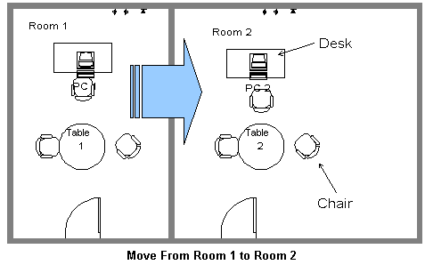
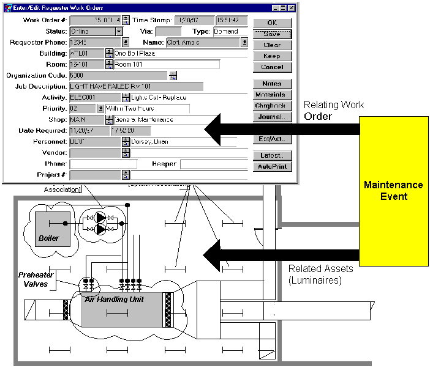

The objective of move management is to move actors (defined as people, groups of people identified as some sub-structure of an organization such as a department or a division or whole organizations) together with all of their associated equipment and furnishings from one place to another.
The main class for move management in the IFC Model is IfcMove. Each move is identified by a name (e.g. Move Executive Vice President John Smith) which is simply a label expressed as a text string. The IfcMove class also has attributes that enable identification of fromwhere a move is to be made and to where it is to be made. The data type for the 'MoveFrom' and 'MoveTo' attribute is IfcSpatialStructureElement which enables identification of the source or target of the move as being a site, building, building storey or individual space.

Identification of the things that need to be moved is achieved through the IfcRelAssignsToProcess. This allows selection of the actor(s) (through selection of IfcActor), equipment (through selection of IfcEquipmentElement) and furniture (through selection of IfcFurnishingElement) that are to be moved. Identification of whether the actor to be moved is a person, group of people or an entire organization is achieved using the IfcPerson, IfcOrganizationRelationship and IfcOrganization classes within the IfcActorResource schema.
Various constraints can be applied to the move. These can be defined both qualitatively (e.g. as soon as possible, move out by etc.) and quantitatively in terms of date and time. Several qualitative constraints can be applied and these can operate in conjunction with the date and time to provide details about move arrangements.
Provision is made for a punch list (or defects list) to be defined for each move. This allows for the completion of a move to be agreed.
Moves can also be aggregated together into move groups where the group can be used to handle a number of individual moves as a single unit.
Planning for a move may be undertaken through the development of a work schedule (see IfcProcessExtension schema). In the case of a move, the elements of a work schedule are defined as IfcMoveScheduleElements (which is a subtype of IfcWorkScheduleElement and therefore inherits all the basic attributes of an element in a schedule).
In Facilities Management, it is common practice to determine the quality of provided space, furniture and equipment according to the function of the role or job that a person is fulfilling. Note that it is considered to be the function rather than the person or title of the job that drives the standard.
An assignment is made between a particular standard (IfcSpaceProgram, IfcFurnitureStandard, IfcEquipmentStandard) and the persons to whom the standard applies through the use of a relationship class (IfcRelAssignsFMStandard). This assignment effectively says that 'these persons are assigned this particular standard of space, equipment or furniture by virtue of their job function. The job function is an attribute of the relationship class and is used as the constraining mechanism for the standard rather than the identity of the person or their job title because, for instance, it may be the policy of the organization to assign a higher standard of furniture to someone in a marketing role (which is customer facing) than to the technical director.
Each standard is determined by one or more classification notations. For instance, several different classifications of furniture may be encompassed by a single furniture standard according to the different types of furniture that may be applied. The FM standards do not relate to individual objects since this would mean that the standard needed to know about instances of e.g. furniture that are in use. By using the reference to a classification, quality criteria can be established. Since each instance of furniture may itself have a classification, the ability of that instance to participate in a particular standard is established.
A maintenance work order is defined as a type of work order with additional attributes that characterize its use in a maintenance environment. It defines the maintenance actions that are to be carried out. It does not identify the assets on which the work is carried out; this is achieved through the IfcRelMaintenanceEvent class which relates a maintenance work order to one or many assets.An event defines the occurrence, or required occurrence of the maintenance action.

A maintenance record (IfcMaintenanceRecord) provides a listing of all maintenance events that have taken place. It relies on the information stored within the instantiation of the assets and maintenance work orders for particular details of what happened at the event. All maintenance events are stored in the maintenance record in order and without redundancy.